Meine Projekte
WBIS – Figma
In diesem Modul haben wir mit Figma eine App für ein Hotel im Wallis entworfen. Die App zeigt verfügbare Chalets an und dient als Grundlage für ein umfassendes UI/UX-Konzept.
 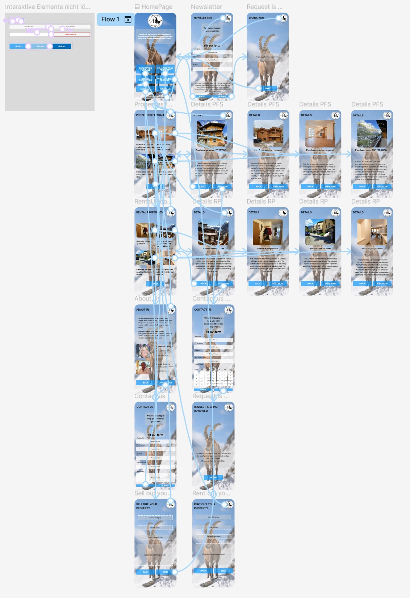
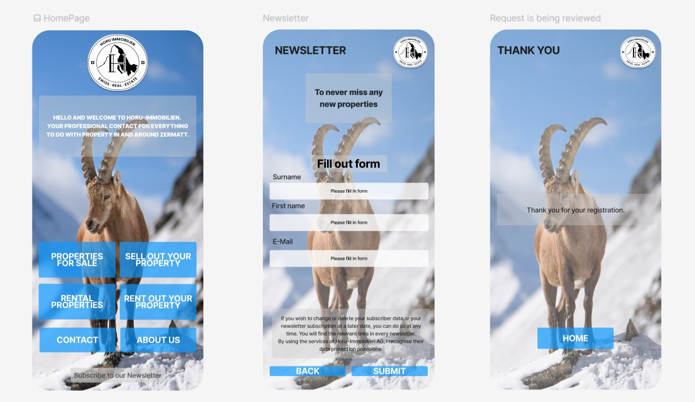
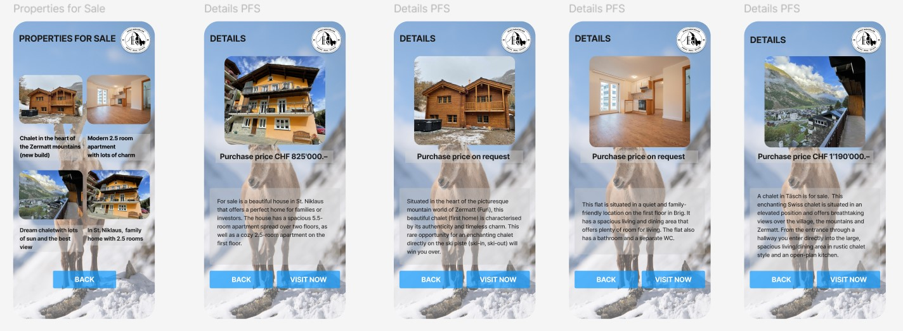
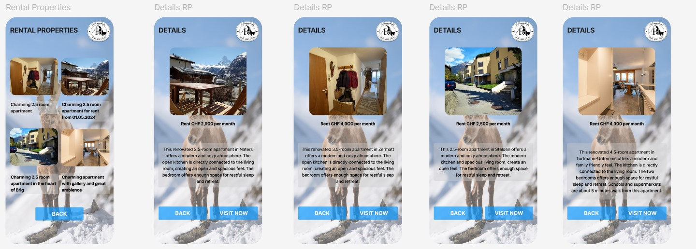
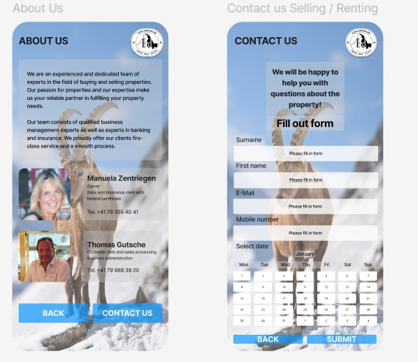
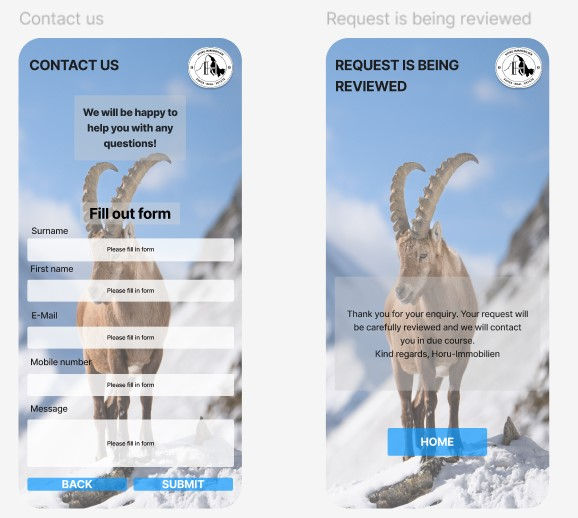
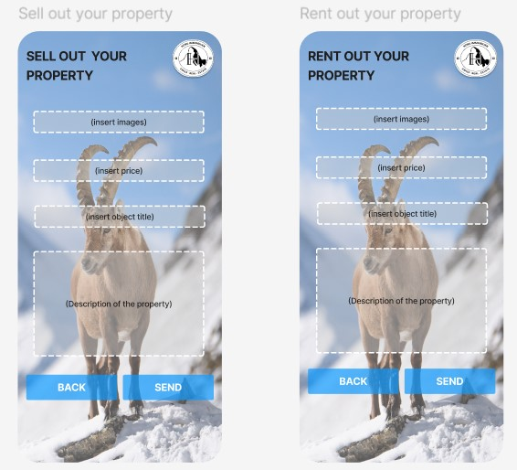
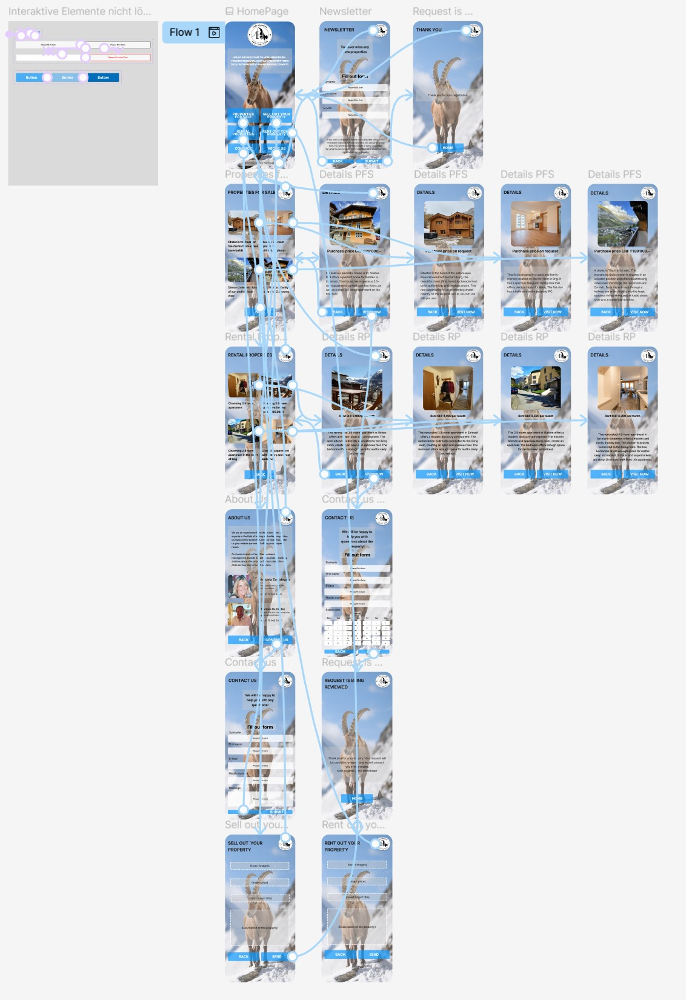
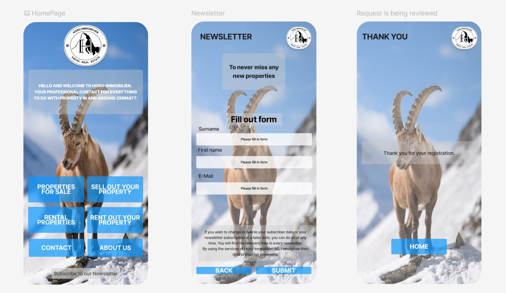
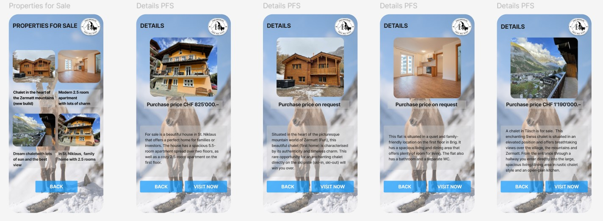
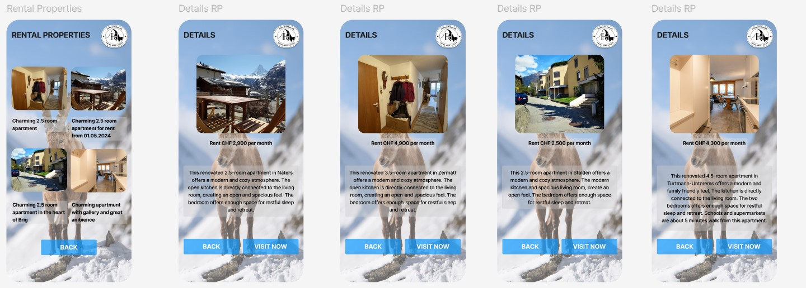
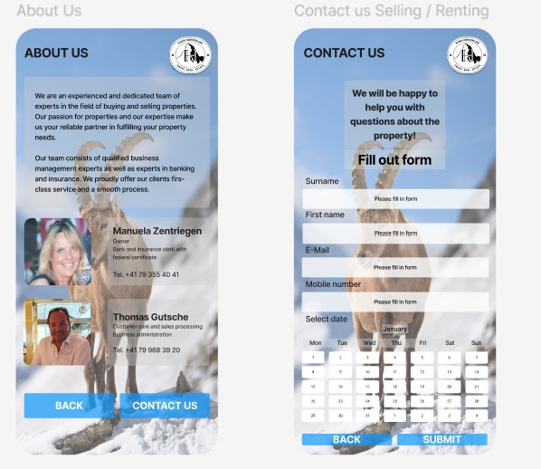
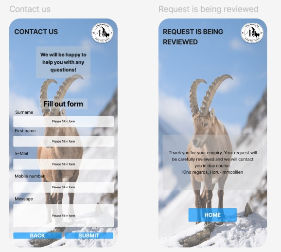
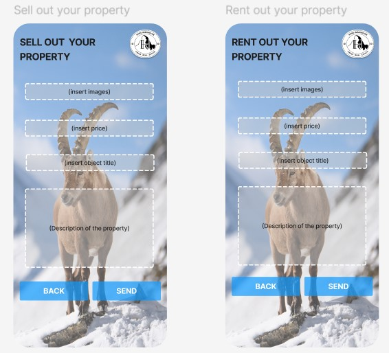
WDDA – Datenbank
Mithilfe von StarUML und SQLite haben wir eine relationale Datenbank aufgebaut. Auf Basis von Unfalldaten aus den USA (CSV-Datei) haben wir eine Analyse und visuelle Auswertung erstellt.

WREQ – Figma App
Wir haben eine App für Bauarbeiter und Büropersonal entwickelt, um Lagerführung und Rapportierung in einer Sanitärfirma zu optimieren. Prototyping erfolgte mit Figma.

WPR2 – Figma und Datenbank
Das Projekt „ImmoMatch“ ist eine Immoscout-ähnliche App, die die Immobiliensuche durch Open Data erleichtert. Die Benutzeroberfläche wurde mit Figma erstellt, das Backend mit Python (Jupyter Notebook, SQLite, OpenData-Anbindung).
WSEG – Webseite
Entwicklung einer Online-Plattform zum Kauf und Verkauf von Büchern. Nutzer können Bücher über die ISBN-Nummer suchen. Die Seite wurde mit Vue.js, Strapi und GitLab umgesetzt.
EWEB – Portfolio Page
Dieses Portfolio, auf dem du dich gerade befindest, ist Teil des Moduls EWEB. Ziel war es, eine persönliche Webpräsenz mit HTML, CSS und JavaScript zu erstellen, die auch Light-/Darkmode sowie responsives Design unterstützt.
SAI3 – KI-Chatbot
In dieser Vertiefung entwickeln wir KI-Modelle mit eigenen Trainingsdaten. Unser Chatbot wird in der Lage sein, auf gesetzliche Artikel zuzugreifen und entsprechende Fragen zu beantworten.